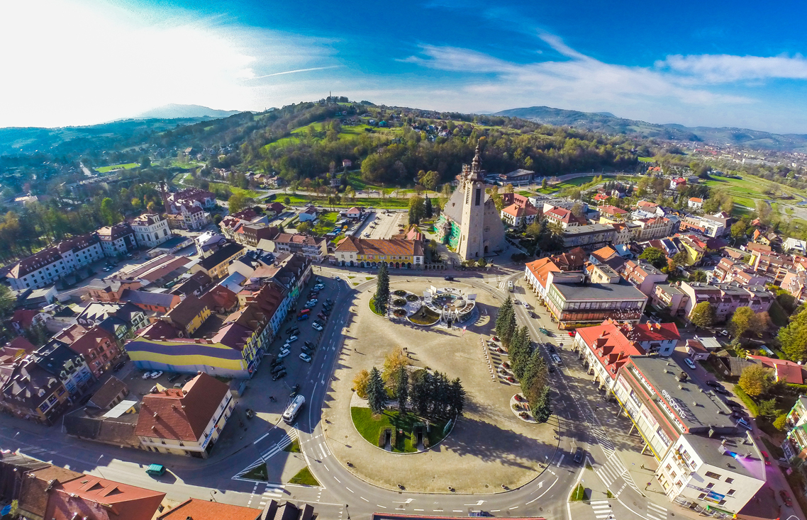

<!-- <mat-toolbar color="primary"> -->
<!--
    <button (click)="checkStart()" mat-button>
        <mat-icon>explore</mat-icon>
       Start</button>
    <button [routerLink]="['/courses']" mat-button>
        <i class="material-icons">
            directions_bus
        </i>Kursy
        </button>
    <button [routerLink]="['/timetable']" mat-button>
     <i class="material-icons">
            format_list_bulleted
        </i>Rozkład</button>

</mat-toolbar>
<div *ngIf="!locationIsDetected || !timetableIsActual" class="spinner-center">
    <mat-spinner></mat-spinner>
  
</div>
<div *ngIf="!locationIsDetected || !timetableIsActual" class="progressInfo">{{progressInfo}}</div>
<div *ngIf="locationIsDetected && timetableIsActual">
</div> -->

<mat-sidenav-container class="example-container" (backdropClick)="close('backdrop')">

    <mat-sidenav class="imgNav" #sidenav (keydown.escape)="close('escape')" disableClose>
        

        <p style="margin-top:-4px"><button [ngClass]="{'activeLink': active=='Znajdź najbliższy'}"  [routerLink]="['/start']" (click)="activate('Znajdź najbliższy')" mat-button>
                <mat-icon>explore</mat-icon>
                Znajdź najbliższy
            </button></p>
        <p>
            <button mat-button [ngClass]="{'activeLink': active=='Rozkład'}" [routerLink]="['/timetable']" (click)="activate('Rozkład')">
                <i class="material-icons">
                    format_list_bulleted
                </i>Rozkład</button></p>

        <button [routerLink]="['/courses']" mat-button [ngClass]="{'activeLink': active.includes('Odjazdy')}">
            <i class="material-icons">
                directions_bus
            </i> Odjazdy
        </button>
        <br>
        <div class="odj">
            <button [routerLink]="['/courses', 'Krk']" (click)="activate('Odjazdy w strone Limanowej')" mat-button>
                W strone Limanowej
            </button>
            <br>
            <button [routerLink]="['/courses', 'Lim']" (click)="activate('Odjazdy w strone Krakowa')" mat-button>
                W strone Krakowa
            </button>
        </div>
        <p>
        <button mat-button [ngClass]="{'activeLink': active=='Mapa busów'}" [routerLink]="['/maps']" (click)="activate('Mapa busów')">
                    <i class="material-icons">
                        map
                    </i>Mapa busów</button></p>
      <div style="position:absolute; bottom:10px;right:10px;color:#e57373;font-family: Roboto, 'Helvetica Neue', sans-serif;">
        v{{appVersion}}
        </div>
    </mat-sidenav>

    <mat-sidenav-content>
        <mat-toolbar style="height:40px" color="primary">
            <button style="padding-left:0px;padding-right:0px;min-width: unset;margin-right: 10px;" (click)="sidenav.open()" mat-button>
                <i class="material-icons">
                    menu
                </i></button>{{active}}
        </mat-toolbar>
        <router-outlet></router-outlet>
    </mat-sidenav-content>
</mat-sidenav-container>